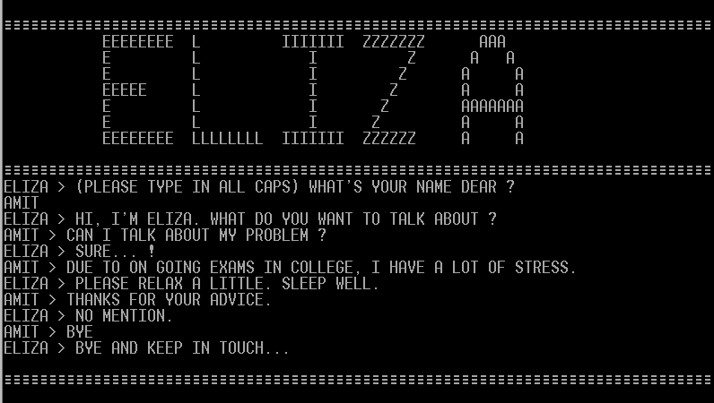
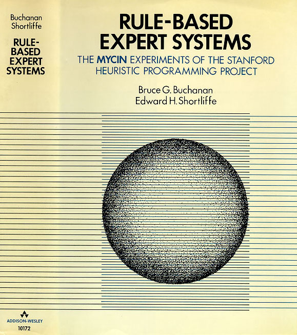
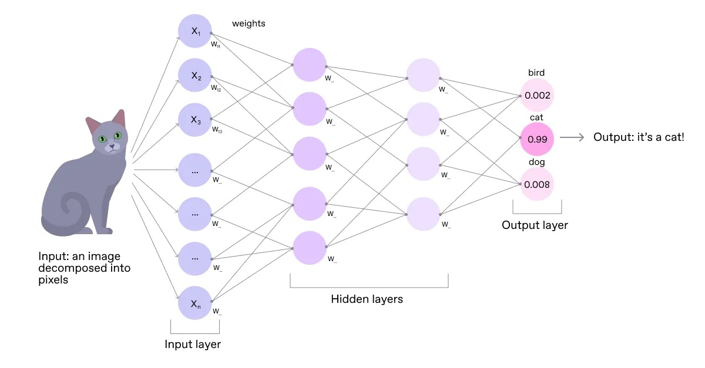
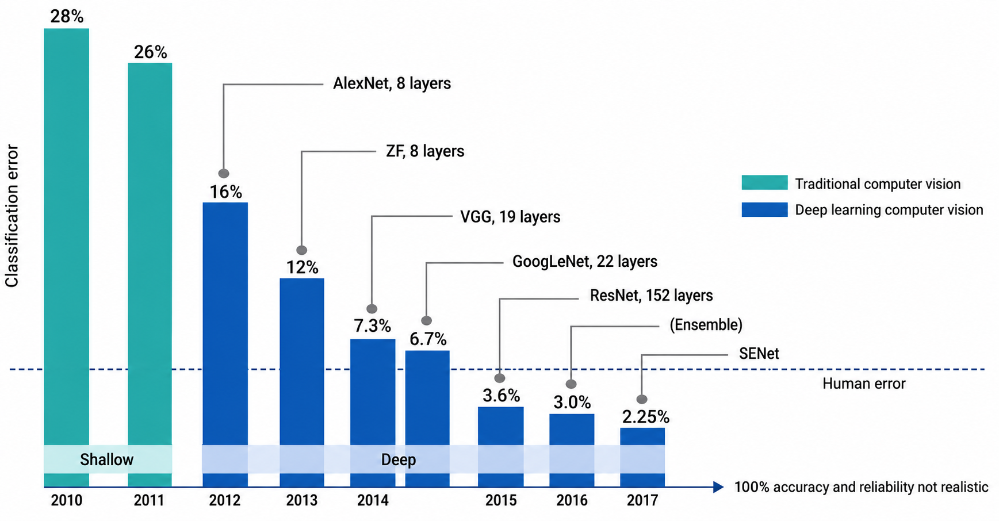
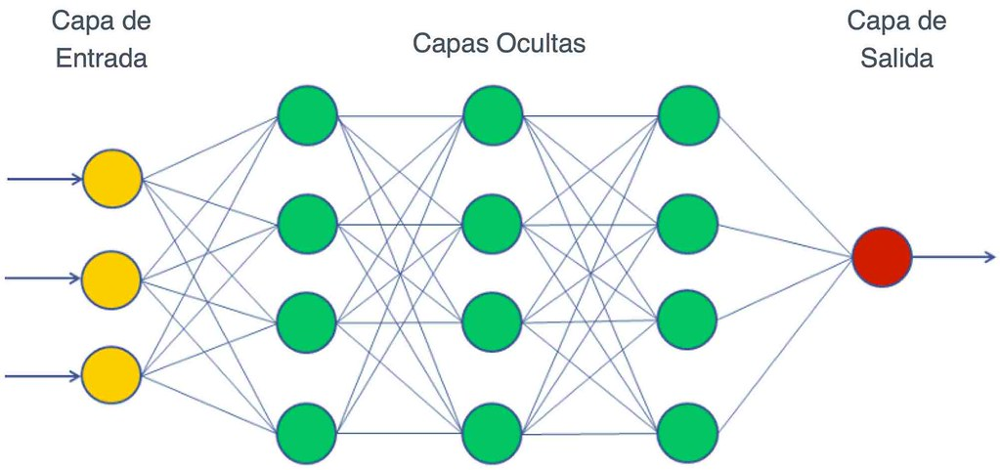
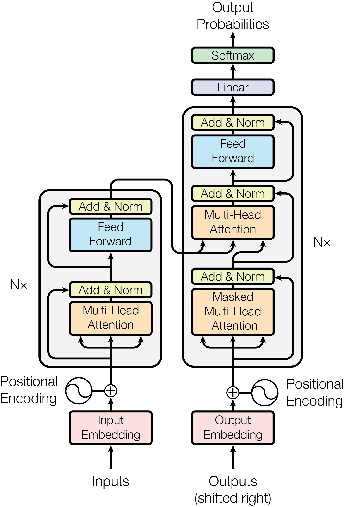
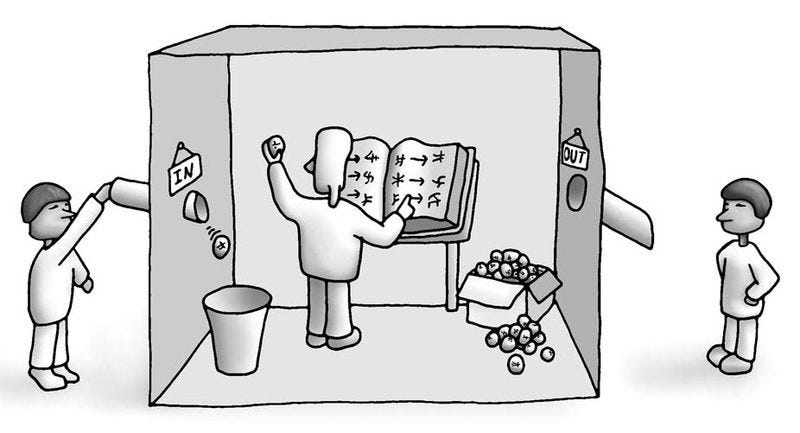
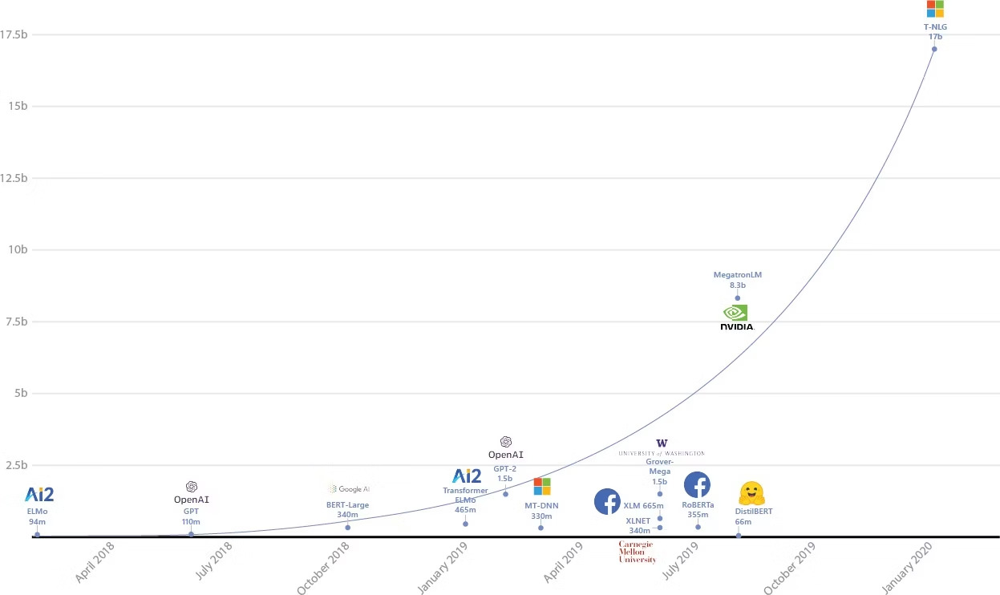

Generalidades de la Inteligencia Artificial
Sesión 1 — ¿Qué es la inteligencia artificial? Historia, definiciones y mitos.
Quiénes Somos
Juan C. Cruz, Ph.D.
Profesor Asociado, Departamento de Ingeniería Biomédica, Universidad de los Andes
- IQ — Universidad de los Andes
- PhD — Kansas State University
- Posdoctorado — Johns Hopkins University
Luis Humberto Reyes, Ph.D.
Profesor Asociado, Universidad de los Andes. Experto en bioprocesos y sistemas biológicos.
- IQ — Universidad Industrial de Santander
- PhD — Texas A&M University
- Investigación en ingeniería biológica y sistemas de fermentación
¿Por Qué Este Curso?
La Contraloría General de la República fiscaliza entidades que ya están adoptando inteligencia artificial. Para ejercer ese control de manera efectiva, los funcionarios necesitan comprender qué es la IA, cómo funciona, y cuáles son sus implicaciones.
Decisiones Informadas
Comprender las capacidades y limitaciones reales de la IA para tomar decisiones basadas en evidencia.
Identificar Oportunidades
Reconocer dónde la IA puede mejorar procesos de control fiscal y auditoría.
Desarrollar Criterio
Evaluar críticamente propuestas, proyectos y riesgos relacionados con IA en entidades controladas.
Transformación Responsable
Liderar la adopción de IA en la Contraloría con visión ética y estratégica.
¿Qué Aprenderemos?
Fundamentos de la IA
Comprender qué es la inteligencia artificial, su historia de 70+ años y los conceptos clave que la definen.
Capacidades Actuales
Identificar qué pueden y qué NO pueden hacer los sistemas de IA actuales, desmitificando expectativas irreales.
Aplicaciones Sectoriales
Conocer casos de uso concretos de IA en el sector público, control fiscal, auditoría y gestión gubernamental.
Interacción Efectiva
Desarrollar habilidades prácticas para interactuar con herramientas de IA de manera productiva y segura.
Análisis Crítico
Evaluar críticamente propuestas, proyectos y resultados de IA con criterio técnico y estratégico.
Marco Regulatorio
Conocer el panorama regulatorio de la IA en Colombia y el mundo, y las implicaciones para la Contraloría.
Evaluación de Riesgos
Identificar y gestionar riesgos asociados al uso de IA: sesgos, alucinaciones, privacidad y ética.
Estrategia Institucional
Diseñar una estrategia básica para la adopción responsable de IA en el contexto de la Contraloría General.
Estructura del Curso
6 módulos en 10 sesiones
El curso cubre el ecosistema completo de la inteligencia artificial aplicada al sector público, desde los fundamentos conceptuales hasta la estrategia institucional.
Sesiones 1–2Qué es la IA, historia, mitos, ecosistema actual
Sesiones 3–4Cómo funcionan, prompting efectivo, herramientas
Sesiones 5–6Casos reales, oportunidades para la Contraloría
Sesión 7Alucinaciones, sesgos, confiabilidad, evaluación
Sesiones 8–9Marco ético, regulación, Colombia y mundo
Sesiones 9–10Adopción institucional, hoja de ruta, tendencias
5 horasEjercicios prácticos con herramientas de IA
Metodología
Enfoque Conceptual-Estratégico
Este NO es un curso técnico de programación. Es un curso para líderes y funcionarios que necesitan comprender, evaluar y gestionar la IA.
- 15 horas de clase sincrónica vía Teams
- 5 horas de trabajo autónomo
- 10 sesiones: lunes y jueves, 10:30–12:00
- Metodología participativa con casos de la Contraloría
- Trabajo final: análisis estratégico real
Cada sesión combina:
- Conceptos clave explicados sin jerga técnica
- Casos reales del sector público
- Discusiones guiadas con su contexto
- Ejercicios prácticos aplicables
- Preguntas y reflexión colectiva
Herramientas que Usaremos
- Microsoft Copilot (Teams/Office)
- ChatGPT, Claude, Gemini
- Bloque Neón (plataforma de práctica)
- Documentos colaborativos en línea
Evaluación y Certificación
Asistencia
Mínimo 85% de asistencia a sesiones para recibir certificación del programa.
Actividades
60% de actividades completadas: lecturas, quices cortos y ejercicios de cada módulo.
Trabajo Final
Análisis estratégico: propuesta de uso de IA en una función específica de la Contraloría General.
Certificación
Al completar el programa satisfactoriamente, recibirán certificado del Centro de Educación para el Fomento CEF – Universidad de los Andes.
Tres Ejes Transversales
Independientemente del módulo o sesión, tres pilares fundamentales atraviesan cada sesión del curso y guían nuestra reflexión colectiva.
Ética y Uso Responsable
Cada herramienta y aplicación se analiza desde sus implicaciones éticas, de privacidad y sesgo.
Aplicabilidad en Su Contexto
Todo se aterriza a la realidad de la Contraloría: sus procesos, entidades controladas y marco legal.
Apropiación con Criterio
No adoptamos IA porque está de moda. Evaluamos cuándo conviene, cuándo no, y bajo qué condiciones.
Agenda de Hoy
Sesión 1 — ¿Qué es la inteligencia artificial?
Bienvenida e Introducción
- Presentación del equipo docente
- Objetivos y metodología del curso
- Diagnóstico inicial: ¿qué saben de IA?
- Encuesta de expectativas
¿Qué es la Inteligencia Artificial?
- Definiciones accesibles
- Historia de 70+ años
- Tipos de IA: simbólica, ML, DL, generativa
- Desmitificando 6 mitos comunes
El Ecosistema Actual
- Los actores principales: OpenAI, Google, Anthropic, Meta
- Modelos líderes a 2026
- Propietario vs. código abierto
- IA en el sector público hoy
Discusión Guiada
- Ejercicio participativo: IA en mi día a día
- Oportunidades para la Contraloría
- Preocupaciones y riesgos reales
- Registro colectivo
Cierre y Próximos Pasos
- Resumen de conceptos clave
- Trabajo autónomo asignado
- Preview: Sesión 2 — Cómo aprenden las máquinas
Diagnóstico Rápido
Conociéndonos
Antes de empezar, queremos conocer el punto de partida del grupo. No hay respuestas correctas o incorrectas — todo conocimiento es válido.
¿Qué sabe sobre IA?
¿Cómo describiría la inteligencia artificial a alguien que no sabe nada del tema?
¿Ha usado ChatGPT, Copilot o Gemini?
¿Con qué frecuencia? ¿Para qué tareas? ¿Qué resultados obtuvo?
¿Qué espera aprender?
¿Cuál es la habilidad o conocimiento más importante que quiere llevarse del curso?
¿Qué le preocupa?
¿Cuál es el mayor riesgo o desafío que ve en la adopción de IA en la Contraloría?
¿Qué es la Inteligencia Artificial?
Historia, definiciones y mitos.
¿Qué es la Inteligencia Artificial?
Una definición accesible
La inteligencia artificial es el campo de la ciencia computacional dedicado a crear sistemas capaces de realizar tareas que, cuando las hace un humano, consideramos que requieren inteligencia.
Aclaración Fundamental
La IA NO es una entidad consciente, no «piensa» ni «siente».
Son algoritmos matemáticos que aprenden patrones estadísticos en grandes volúmenes de datos.
La inteligencia aparente surge de optimización matemática, no de comprensión real.
La IA en la Vida Cotidiana
Ya la estamos usando
Muchas personas interactúan con sistemas de IA docenas de veces al día sin reconocerlo. La IA ya no es una tecnología del futuro.
Recomendaciones Personalizadas
Netflix, Spotify y YouTube analizan su historial para predecir qué quiere ver o escuchar. El 80% del tiempo de visualización en Netflix viene de recomendaciones de IA.
Asistencia de Escritura
El autocompletado de Gmail, la corrección ortográfica avanzada y sugerencias de redacción en Word son sistemas de IA. WhatsApp usa IA para sugerir respuestas rápidas.
Navegación Inteligente
Waze y Google Maps usan IA para predecir el tráfico en tiempo real, optimizar rutas y estimar tiempos de llegada con millones de puntos de datos.
Filtros de Correo
Gmail y Outlook clasifican automáticamente spam, promociones y correos prioritarios. Más del 99.9% del spam es bloqueado antes de llegar a su bandeja.
Reconocimiento Biométrico
Face ID en iPhone, el reconocimiento facial de Android y los sistemas de seguridad bancaria usan redes neuronales para verificar identidad en milisegundos.
Chatbots de Atención
Los bots de atención al cliente de bancos, aerolíneas y e-commerce son sistemas de IA. Muchos resuelven el 70-80% de consultas sin intervención humana.
Los Orígenes de la IA
Una historia de 70+ años (1950–1970)
La inteligencia artificial no nació ayer. Tiene raíces profundas en matemáticas, lógica y filosofía de la mente que se remontan a los años 50.
Alan Turing publica Computing Machinery and Intelligence y propone la pregunta: «¿Pueden las máquinas pensar?»
Diseña el Test de Turing: si una máquina puede sostener una conversación indistinguible de la humana, puede considerarse inteligente.
John McCarthy acuña el término «Inteligencia Artificial» en la Conferencia de Dartmouth, New Hampshire.
Marvin Minsky, Claude Shannon y otros 10 investigadores definen el campo: «toda característica de la inteligencia puede describirse con suficiente precisión para que una máquina la simule».
ELIZA (MIT, 1966) simula un psicoterapeuta usando patrones simples de texto. Muchos usuarios creyeron hablar con un humano real.
El Perceptrón de Rosenblatt intenta modelar neuronas artificiales. Optimismo extremo: se predice que las máquinas igualarán la inteligencia humana en 20 años.

Las promesas no se cumplen. El informe Lighthill (1973) concluye que la IA no ha producido los resultados prometidos.
Primer «invierno de la IA»: recorte masivo de financiamiento en EE.UU. y Reino Unido. El campo entra en una fase de escepticismo que durará casi una década.
La IA Simbólica
El enfoque basado en reglas (1970–1990)
Tras el primer invierno, la IA resurge con un nuevo paradigma: en lugar de simular el cerebro, codificar el conocimiento humano en reglas lógicas explícitas.
El Enfoque Simbólico
Los Sistemas Expertos encapsulan el conocimiento de especialistas humanos en miles de reglas del tipo SI...ENTONCES.
Décadas de 1970 y 1980: segundo boom de la IA. Gobiernos y empresas invierten millones. Japón lanza el proyecto de computadoras de 5ª generación.
MYCIN (Stanford): diagnóstico de infecciones bacterianas, supera a médicos junior en precisión.
XCON (DEC): configura pedidos de computadoras, ahorra $40M/año.
- Solo funciona en dominios muy específicos
- Costosísimos de construir y mantener
- No aprenden ni se adaptan
- Segundo invierno de la IA (1987–1993): fracaso del hardware especializado japonés

La Revolución del Machine Learning
Un cambio de paradigma (2000–2015)
En lugar de codificar reglas manualmente, ¿qué pasa si dejamos que las máquinas aprendan las reglas por sí solas a partir de los datos?
Machine Learning
Los sistemas aprenden patrones directamente de los datos, sin que un humano programe reglas explícitas. El algoritmo descubre por sí solo las relaciones relevantes.
La Analogía del Gato
No programamos reglas para reconocer gatos (orejas+bigotes+cola). Le mostramos millones de fotos de gatos y el algoritmo aprende qué patrones los distinguen.

Aprendizaje Supervisado
Aprende con ejemplos etiquetados. Ej: detectar fraude (transacciones marcadas como fraude/no-fraude).
Aprendizaje No Supervisado
Encuentra patrones sin etiquetas. Ej: segmentar contribuyentes en grupos similares.
Aprendizaje por Refuerzo
Aprende por prueba y error con recompensas. Ej: AlphaGo aprendió a jugar mejor que cualquier humano.
La Era del Deep Learning
Redes neuronales profundas (2012–presente)
En 2012 ocurre un momento histórico: una red neuronal profunda destrona a los mejores algoritmos de visión computacional y cambia para siempre el campo de la IA.
Deep Learning (Aprendizaje Profundo)
Redes neuronales con muchas capas (profundas) que aprenden representaciones jerárquicas de los datos.
Inspiradas (muy vagamente) en el cerebro: las primeras capas detectan bordes, las siguientes formas, las finales objetos completos.
AlexNet gana ImageNet 2012 con 15.3% de error vs. 26.2% del segundo lugar. Una brecha sin precedentes.
Krizhevsky, Sutskever e Hinton demuestran que las redes profundas, con suficientes datos y GPU, superan masivamente los métodos anteriores.

El Combustible: Datos
ImageNet: 14 millones de imágenes, 1000 categorías, construido por Fei-Fei Li en Stanford.
Internet proveyó cantidades de datos impensables: fotos, textos, videos. Sin datos masivos, el deep learning no funciona. Los datos son el petróleo del siglo XXI.
Las GPUs (tarjetas gráficas) permiten paralelizar masivamente los cálculos matriciales que requieren las redes neuronales.
NVIDIA se convierte en la empresa más valiosa del mundo gracias a la demanda de GPUs para IA. Una GPU moderna hace en segundos lo que le tomaría días a una CPU.

Las Técnicas Clave
- Backpropagation: propagar el error hacia atrás para ajustar los pesos
- ReLU: función de activación que permite redes mucho más profundas
- Dropout: técnica para evitar sobreajuste
- Batch normalization: estabiliza el entrenamiento
Aplicaciones revolucionarias: reconocimiento de imágenes, traducción automática, diagnóstico médico, AlphaFold (estructura de proteínas).
La IA Generativa
La IA Generativa · 2017–presente
En 2017, Google publica Attention is All You Need, introduciendo la arquitectura Transformer. Esta innovación hace posible los modelos de lenguaje masivos que dominan la IA hoy.

Generación de Texto
Los Modelos de Lenguaje Grande (LLM) generan texto coherente, responden preguntas, escriben código y analizan documentos.
- ChatGPT / GPT-5 — OpenAI
- Claude — Anthropic
- Gemini — Google DeepMind
- Llama — Meta (código abierto)
Generación de Imágenes
A partir de una descripción de texto, estos modelos crean imágenes fotorrealistas, ilustraciones y diseños.
- DALL-E 3 — OpenAI
- Midjourney — Midjourney
- Stable Diffusion — open source
- Firefly — Adobe
Generación de Audio y Voz
Clonación de voz, música generada por IA y eliminación de ruido en grabaciones.
- ElevenLabs — clonación de voz
- Suno — música completa desde texto
- Adobe Podcast — mejora de calidad de audio
Generación de Video
Crear videos desde texto o imágenes, editar escenas y generar efectos visuales.
- Sora — OpenAI (texto a video)
- Runway — edición de video con IA
- Pika — animación de imágenes
Generación de Código
Asistentes que escriben, depuran y explican código en decenas de lenguajes de programación.
- GitHub Copilot — Microsoft/OpenAI
- Cursor — IDE con IA integrada
- Claude Code — Anthropic
Datos Sintéticos
Generación de datos artificiales que preservan las propiedades estadísticas de datos reales, útil cuando los datos reales son escasos o sensibles.
- Útil en salud (datos de pacientes)
- Útil en finanzas (datos de transacciones)
- Útil en sector público (datos confidenciales)
Las Olas de la IA
Cada ola construye sobre la anterior
El machine learning es un tipo de IA. El deep learning es un tipo de machine learning. La IA generativa es un tipo de deep learning. No son tecnologías separadas.
IA — Campo amplio
Todo sistema que simula capacidades cognitivas humanas: razonamiento, aprendizaje, percepción.
Machine Learning
IA que aprende de datos sin programación explícita de reglas.
Deep Learning
ML con redes neuronales de muchas capas para reconocer patrones complejos.
IA Generativa
DL que CREA contenido nuevo: texto, imágenes, audio, video, código.
Desmitificando la IA
Seis mitos comunes confrontados con la realidad
Gran parte de lo que el público general cree sobre la IA proviene de películas de ciencia ficción y cobertura mediática sensacionalista. Confrontemos los mitos más dañinos.
«La IA es como en las películas»
Terminator, Ex Machina, Her — robots con conciencia, emociones y objetivos propios.
La IA actual son herramientas matemáticas especializadas. No tienen conciencia, no tienen deseos ni emociones. ChatGPT no «quiere» nada.
«La IA reemplazará todos los empleos»
Automatización masiva e inevitable del 100% de los trabajos.
La IA transforma los trabajos, no los elimina masivamente. Automatiza tareas específicas. Los funcionarios que usen IA bien serán más productivos y valiosos que los que no la usen.
«La IA siempre tiene razón»
Las IAs alucinan con confianza. Inventan hechos, citan fuentes inexistentes, cometen errores matemáticos. Siempre verificar información crítica.

«La IA entiende lo que dice»
«ChatGPT sabe de medicina / leyes / ingeniería.»
Los LLMs son predictores de texto estadísticos. Predicen cuál palabra sigue a las anteriores con base en patrones. No comprenden el significado. El resultado suena coherente porque fue entrenado con texto humano coherente.
«La IA es solo para técnicos»
«Necesito saber programar para usar IA.»
Las herramientas actuales de IA son accesibles mediante lenguaje natural. Cualquier persona que pueda escribir una pregunta clara puede usar ChatGPT, Claude o Gemini efectivamente.
«La IA es solo una moda pasajera»
«Esto pasará como otras modas tecnológicas.»
La IA generativa representa un cambio estructural en la economía digital. OpenAI tiene 400M usuarios. Microsoft, Google y Amazon han invertido cientos de miles de millones. No es una burbuja.
¿Por Qué Importan los Mitos?
Los mitos sobre la IA tienen consecuencias prácticas concretas. En el contexto de la Contraloría, creer en mitos puede llevar a decisiones institucionales erróneas.
Riesgo de Subestimar la IA
Ignorar la tecnología por considerarla «pura ciencia ficción» lleva a parálisis institucional. Entidades controladas ya usan IA; la Contraloría debe poder evaluarlas.
→ Consecuencia: rezago en capacidad fiscalizadora.
Riesgo de Sobreestimar la IA
Confiar ciegamente en resultados de IA sin verificación. Delegar decisiones críticas de auditoría a un sistema que puede estar equivocado.
→ Consecuencia: errores graves en informes y dictámenes.
La Necesidad del Pensamiento Crítico
Los funcionarios necesitan criterio técnico para evaluar propuestas de IA, licitaciones de tecnología y resultados de sistemas que usen las entidades controladas.
Aplicación al Control Fiscal
La Contraloría fiscalizará entidades que usen IA para procesos de contratación, pagos y gestión. Sin comprensión real, no se puede auditar lo que no se entiende.
IA Estrecha vs. IA General
Es fundamental distinguir entre lo que existe hoy y lo que es hipotético. Confundir estas categorías lleva a expectativas irreales y decisiones mal informadas.
IA Estrecha (Artificial Narrow Intelligence)
Todo lo que usamos hoy: ChatGPT, DALL-E, AlphaFold, Siri, Netflix, el filtro de spam.
Características:
- Muy competente en UN dominio específico
- Incompetente fuera de ese dominio
- No tiene conciencia ni comprensión real
- Cada sistema debe entrenarse para su tarea
- No generaliza como un humano
IA General (Artificial General Intelligence)
Hipotético: un sistema que iguala la flexibilidad cognitiva humana en cualquier dominio.
- Aprender cualquier tarea sin re-entrenamiento
- Razonar, planear y adaptarse como un humano
- Posiblemente consciente o con comprensión real
- No existe. Debate activo sobre si es posible y cuándo.
- Estimaciones van de 5 años a «nunca»

¿Cómo Aprende una IA?
La analogía humana, paso a paso
Imaginemos que un estudiante va a aprender a clasificar documentos de auditoría. El proceso de aprendizaje de una IA es sorprendentemente análogo.
Los Datos (Experiencias)
Como el estudiante necesita leer documentos para aprender, la IA necesita datos de entrenamiento: millones de ejemplos del problema que debe resolver.
- Imágenes etiquetadas para visión
- Textos y sus traducciones para traducción
- Transacciones marcadas para detección de fraude
- Cientos de miles de millones de palabras para LLMs
El Algoritmo (Método de Estudio)
El algoritmo define cómo el sistema aprende de los datos. Es el «método de estudio» de la IA.
- Redes neuronales para visión y lenguaje
- Árboles de decisión para clasificación
- Clustering para segmentación
- Transformers para IA generativa
El Modelo (Conocimiento Aprendido)
Tras el entrenamiento, el modelo encapsula todo lo aprendido: millones o miles de millones de parámetros (pesos numéricos) que representan los patrones encontrados.
GPT-4: ~1.8 billones de parámetros. Llama 4: hasta 2 billones. Cada parámetro es un número ajustado durante el entrenamiento.
El Entrenamiento (Proceso)
El entrenamiento es un proceso iterativo: el modelo hace predicciones, calcula el error, y ajusta sus parámetros para reducirlo.
GPT-4 fue entrenado en semanas con miles de GPUs. Costo estimado: >$100 millones. Por eso pocas empresas pueden entrenar modelos fundacionales.
La Inferencia (Aplicar el Conocimiento)
Cuando usamos ChatGPT o Claude, estamos en la fase de inferencia: el modelo usa lo aprendido para responder nuestra consulta específica.
La inferencia es rápida y barata comparada con el entrenamiento. Por eso podemos acceder a modelos potentes por pocos dólares al mes.
La IA Generativa por Dentro
¿Cómo funciona en términos simples?
Herramientas como ChatGPT y Claude son modelos de lenguaje grande (LLM). Entender cómo funcionan es esencial para usarlos bien.
Entrenamiento en Escala Masiva
Los LLMs se entrenan con cientos de miles de millones de palabras: libros, sitios web, código, artículos científicos, Wikipedia, Reddit.
Este proceso toma meses, usa miles de GPUs especializadas, y cuesta cientos de millones de dólares. Solo unas pocas empresas en el mundo pueden hacerlo.

Aprendizaje de Patrones
El modelo NO aprende el significado de las palabras. Aprende patrones estadísticos: qué palabras tienden a aparecer juntas, qué estructuras de texto son coherentes.
Si ve «La capital de Colombia es ___», aprende que «Bogotá» es estadísticamente muy probable en ese contexto, basado en haber leído esa frase miles de veces.
La Instrucción: El Prompt
El prompt es la instrucción que damos al modelo. La calidad del resultado depende críticamente de la calidad del prompt.
- Ser específico: contexto + tarea + formato deseado
- Dar ejemplos del resultado esperado
- Indicar el rol del asistente: «Actúa como auditor...»
- Especificar restricciones: «máximo 200 palabras»
El prompt engineering es una habilidad que desarrollaremos en el Módulo 2.
Cómo Genera el Texto
El modelo genera texto token a token (palabras o fragmentos de palabras), eligiendo el siguiente token más probable dado todo el contexto anterior.
NO tiene un texto pre-escrito que lee. Lo construye en tiempo real, calculando probabilidades con miles de millones de operaciones matemáticas por segundo.
Analogía Útil
Un estudiante brillante que leyó millones de documentos, tiene una memoria perfecta de patrones lingüísticos, pero no comprende realmente lo que dice — solo sabe qué texto es coherente con el contexto.
Punto de Reflexión
Antes de pasar al ecosistema actual, detengámonos un momento para consolidar lo que hemos visto.
No es Magia
La IA es matemática aplicada a gran escala: álgebra lineal, probabilidad y optimización. Poderosa, pero determinista y auditable.
Historia de 70+ Años
No es nueva. Ha pasado por múltiples inviernos y resurrecciones. Los saltos actuales se explican por más datos, más cómputo y mejores algoritmos.
Herramienta Poderosa, NO Infalible
Puede hacer cosas impresionantes, pero falla de maneras impredecibles. Alucinaciones, sesgos y errores son parte inherente de la tecnología actual.
El Conocimiento es Poder Crítico
Entender los fundamentos nos permite evaluar propuestas, detectar promesas exageradas y tomar decisiones institucionales informadas.
El Ecosistema Actual de la IA
Actores, modelos y plataformas.
Los Gigantes de la IA
¿Quién es quién en el ecosistema global?
Un pequeño grupo de empresas concentra el desarrollo de los modelos más capaces. Conocer sus posicionamientos es clave para evaluar sus herramientas.
OpenAI
ChatGPT + GPT-5. Inversión de $13B de Microsoft. El actor que desencadenó la revolución de IA generativa con ChatGPT en noviembre 2022.
Anthropic
Claude 4 (Sonnet, Opus, Haiku). Respaldada por Google y Amazon. Fundada por ex-directivos de OpenAI, con foco en seguridad y alineación de IA.
Google / DeepMind
Gemini 2.5 Pro + Flash. Integrado en todo el ecosistema Google (Search, Gmail, Docs). Contexto de hasta 1 millón de tokens.
Meta AI
Llama 4 (código abierto). El modelo open source más capaz. Gratuito para investigación y uso comercial. Contexto de hasta 10 millones de tokens (Scout).
DeepSeek
V3 + R1 (código abierto). El disruptor chino: rendimiento comparable a GPT-4 a una fracción del costo. Sacudió los mercados en enero 2025.
xAI (Grok)
Grok 4 (contexto 2M tokens). Creado por Elon Musk. Accede a datos en tiempo real de X (Twitter). Integrado en la plataforma X Premium.
Mistral AI
Mistral Large + Codestral. Empresa francesa, referente europeo en soberanía de IA. Modelos eficientes, algunos open source, con énfasis en privacidad.
Modelos Líderes
Comparativa a Febrero 2026
El mercado de modelos de IA evoluciona cada semanas. Esta tabla muestra los modelos más relevantes por capacidad, costo y características especiales.
| Modelo | Proveedor | Contexto | Precio (in/out · 1M tok) | Características destacadas |
|---|---|---|---|---|
| Claude Sonnet 4.5 | Anthropic | 200K | $3 / $15 | Balance óptimo calidad-costo, razonamiento avanzado |
| Claude Haiku 4.5 | Anthropic | 200K | $1 / $5 | Velocidad máxima, bajo costo, tareas simples |
| GPT-5 | OpenAI | 272K | $1.25 / $10 | Multimodal completo, integrado en ChatGPT |
| Gemini 2.5 Pro | 1M | $1.25 / $10 | Contexto masivo, razonamiento largo | |
| Gemini 2.5 Flash | 1M | $0.30 / $2.50 | Velocidad + contexto, muy económico | |
| DeepSeek V3.1 | DeepSeek | 128K | $0.27 / $1.10 | Código abierto, muy económico, chino |
| DeepSeek R1 | DeepSeek | 128K | $0.55 / $2.19 | Razonamiento paso a paso, código abierto |
| Grok 4 | xAI | 2M | $3 / $15 | Contexto 2M, datos en tiempo real de X |
| Llama 4 Maverick | Meta | 1M | GRATIS | Open source, on-premise posible |
| Llama 4 Scout | Meta | 10M | GRATIS | Contexto 10M tokens, gratuito |
Propietario vs. Código Abierto
Una de las decisiones más importantes para la Contraloría es qué tipo de modelos usar. Cada enfoque tiene ventajas y desventajas que deben evaluarse caso por caso.
Modelos Propietarios
ChatGPT, Claude, Gemini
- Interfaz lista para usar
- Soporte técnico continuo
- Actualizaciones automáticas
- Sin infraestructura propia
- Los datos van a servidores externos
- Dependencia del proveedor
- Costo por uso (por token)
- Posible exposición de información sensible
Código Abierto
Llama, DeepSeek, Mistral
- Datos no salen de su infraestructura
- Costo variable (infraestructura propia)
- Control total sobre el modelo
- Personalizable para su contexto
- Requiere infraestructura de cómputo
- Equipo especializado para mantener
- Inversión en hardware o nube privada
- Mayor complejidad de implementación
Tipos de IA en el Mercado
Más allá de los grandes modelos fundacionales, el mercado ofrece una diversidad de herramientas especializadas para diferentes necesidades.
Asistentes Virtuales
Diseñados para responder preguntas y ejecutar tareas simples mediante voz o texto.
- Siri — Apple
- Alexa — Amazon
- Google Assistant
- Cortana — Microsoft (descontinuado)
Motores de Búsqueda Aumentados
Búsqueda web potenciada con IA que resume, sintetiza y responde preguntas directamente.
- Google Search (AI Overviews)
- Microsoft Bing Copilot
- Perplexity AI — especializado en búsqueda con citas
Suites de Productividad
IA integrada en las herramientas de trabajo diario: creación de documentos, análisis de datos, resúmenes.
- Microsoft 365 Copilot (Word, Excel, Teams, Outlook)
- Google Workspace (Docs, Sheets, Gmail)
- Notion AI
Chatbots Generativos
Modelos de lenguaje de propósito general para conversación, análisis, redacción y razonamiento.
- ChatGPT (OpenAI)
- Claude (Anthropic)
- Gemini (Google)
Generadores de Imagen
Crean imágenes fotorrealistas o artísticas a partir de descripciones de texto.
- DALL-E 3 — OpenAI (integrado en ChatGPT)
- Midjourney — alta calidad artística
- Stable Diffusion — open source
- Adobe Firefly — integrado en Creative Cloud
Software Empresarial con IA
Plataformas empresariales que integran IA en procesos de negocio específicos.
- Salesforce Einstein — CRM con IA
- SAP AI — ERP con IA
- ServiceNow — gestión de servicios TI
- IBM Watson — análisis empresarial
IA Embebida en Dispositivos
IA integrada directamente en hardware sin conexión a la nube.
- Face ID y reconocimiento facial en smartphones
- Cámaras con estabilización y mejora automática
- Procesadores neurales en computadores modernos
- Vehículos con asistencia de conducción
Donde Ya Estamos Usando IA
Sin saberlo, muchos funcionarios ya interactúan con IA en sus herramientas de trabajo diario. La Contraloría usa plataformas de Microsoft y Google que ya incorporan IA.
Microsoft 365 Copilot
- Word: redacción automática, resúmenes, mejora de texto
- Excel: análisis de datos, fórmulas naturales, gráficos
- PowerPoint: crear presentaciones desde texto o documentos
- Outlook: resúmenes de correos, borradores de respuestas
- Teams: transcripción automática, notas de reuniones, resúmenes
Google Workspace con Gemini
- Docs: escritura con IA, mejora de redacción
- Sheets: análisis y visualización de datos
- Gmail: borrador inteligente, respuestas sugeridas
- Meet: transcripción y subtítulos en tiempo real
- Drive: búsqueda semántica en documentos
IA en Videoconferencias
- Transcripción automática de reuniones
- Separación de fondo (background blur)
- Reducción de ruido ambiental
- Subtítulos en tiempo real y en múltiples idiomas
- Resúmenes automáticos post-reunión
IA en el Correo Electrónico
- Filtros avanzados de spam (>99.9% precisión)
- Clasificación automática: importante, social, promociones
- Respuestas inteligentes sugeridas
- Búsqueda semántica: «correos sobre licitación de marzo»
- Traducción automática de correos en otros idiomas
IA en Gestión Documental
- OCR avanzado: extraer texto de documentos escaneados
- Clasificación automática de documentos por tipo
- Búsqueda por contenido, no solo nombre de archivo
- Extracción de información clave de contratos
- Detección de documentos duplicados o similares
La IA en el Sector Público
Panorama general
Los gobiernos de todo el mundo están adoptando IA para mejorar servicios, aumentar eficiencia y fortalecer la toma de decisiones. Colombia no es la excepción.
Eficiencia Administrativa
Automatización de procesos repetitivos, reducción de tiempos de respuesta y optimización de recursos.
Servicios al Ciudadano
Chatbots de atención, procesamiento de trámites, personalización de servicios y reducción de filas.
Gobernanza Basada en Datos
Análisis predictivo para política pública, detección de anomalías y monitoreo en tiempo real.
Casos Internacionales Destacados
Detección de Fraude Fiscal
IRS (EE.UU.) y HMRC (UK) usan ML para identificar patrones de evasión fiscal, con tasas de detección superiores al 90%.
Análisis Predictivo de Riesgos
Tribunales europeos usan IA para priorizar casos según probabilidad de irregularidades.
Automatización de Trámites
Estonia y Singapur procesan el 99% de trámites gubernamentales sin papel. Tiempo de respuesta: minutos.
Análisis de Documentos Legales
IA extrae cláusulas clave, detecta inconsistencias y resume contratos en segundos.
Optimización de Procesos
Algoritmos de IA reducen costos operativos gubernamentales entre 20-40% en procesos administrativos.
Monitoreo de Contratación Pública
Colombia: SECOP II con análisis de IA para detectar posibles irregularidades en contratos públicos.
Tendencias 2025–2026
El campo de la IA evoluciona a una velocidad sin precedentes. Estas son las tendencias que definirán el ecosistema en los próximos 12–18 meses y que impactarán directamente la forma en que trabajan.
Modelos Multimodales
Los modelos procesan simultáneamente texto, imágenes, audio y video. GPT-4o, Gemini 1.5 y Claude 3 ya son nativamente multimodales.
Agentes Autónomos
IAs que ejecutan tareas complejas de múltiples pasos sin supervisión humana: navegan la web, ejecutan código, gestionan archivos.
IA Especializada por Sector
Modelos entrenados específicamente para medicina, derecho, finanzas y sector público, con vocabulario y casos de uso especializados.
Razonamiento Avanzado
Modelos que «piensan antes de responder» (chain-of-thought): GPT-o1, DeepSeek R1. Mejoras dramáticas en matemáticas, lógica y análisis.
Contextos Masivos
Llama 4 Scout maneja 10 millones de tokens (~7,500 libros). Permite analizar repositorios de documentos completos en una sola consulta.
Open Source Competitivo
DeepSeek y Llama 4 demuestran que los modelos abiertos igualan a los propietarios. Reduce costos y aumenta soberanía tecnológica.

Discusión Guiada
La IA en nuestro contexto: ¿qué significa para la Contraloría?
Ejercicio Participativo
La IA en mi día a día
Reflexionemos colectivamente sobre nuestra experiencia actual con la IA y las oportunidades que identificamos en nuestro contexto de trabajo.
¿Dónde ya están viendo IA?
¿En qué herramientas o procesos de trabajo han notado que la IA ya está integrada, aunque no lo llamemos así?
¿Qué tareas podrían beneficiarse?
¿Qué actividades repetitivas, de análisis de documentos o de síntesis de información podrían mejorar con IA?
¿Qué les preocupa?
¿Cuáles son sus principales dudas, miedos o reservas sobre usar IA en el contexto de la Contraloría?
Oportunidades para la Contraloría
Identificamos siete áreas donde la IA puede generar valor concreto para la función fiscalizadora de la Contraloría General de la República.
Análisis de Grandes Volúmenes Documentales
La IA puede procesar y resumir miles de documentos, informes y contratos en el tiempo que le tomaría a un auditor revisar decenas.
- Resumen automático de informes de gestión
- Extracción de cifras y compromisos clave
- Identificación de inconsistencias entre documentos
- Análisis de pliegos de condiciones y contratos
Redacción de Borradores y Respuestas
Generar primeros borradores de informes, oficios y conceptos que los funcionarios revisan y perfeccionan.
- Borradores de respuestas a derechos de petición
- Primeras versiones de informes de auditoría
- Síntesis de hallazgos para presentaciones
- Traducción y mejora de redacción formal
Detección de Anomalías en Datos Financieros
Algoritmos de ML pueden identificar patrones inusuales en grandes conjuntos de datos de contratación y ejecución presupuestal.
- Contratos con precios atípicos vs. mercado
- Patrones de fraccionamiento de contratos
- Contratistas con comportamientos inusuales
- Inconsistencias en ejecución presupuestal
Síntesis de Normatividad Compleja
La IA puede resumir normas, precedentes y jurisprudencia, ayudando a los funcionarios a ubicarse rápidamente en marcos legales complejos.
- Resúmenes de leyes y decretos relevantes
- Identificación de normas aplicables a un caso
- Comparación de regulaciones entre entidades
- Actualización automática ante cambios normativos
Elaboración de Conceptos Técnicos
Soporte para la elaboración de conceptos técnicos especializados, con IA como herramienta de investigación y síntesis.
- Investigación de mejores prácticas internacionales
- Síntesis de literatura técnica especializada
- Análisis comparativo de estándares
- Propuestas de recomendaciones estructuradas
Clasificación y Priorización de Hallazgos
Sistemas de IA pueden ayudar a clasificar y priorizar hallazgos de auditoría según riesgo e impacto.
- Clasificación automática de hallazgos por severidad
- Priorización por impacto fiscal potencial
- Identificación de patrones recurrentes entre entidades
- Seguimiento automatizado de planes de mejoramiento
Capacitación y Gestión del Conocimiento
IA como herramienta de aprendizaje continuo y preservación del conocimiento institucional.
- Tutores virtuales para formación en auditoría
- Buscadores semánticos de doctrina institucional
- Onboarding acelerado de funcionarios nuevos
- Sistematización de lecciones aprendidas
Preocupaciones y Riesgos Reales
Adoptar IA con responsabilidad implica reconocer sus riesgos. No se trata de rechazar la tecnología, sino de implementarla con los ojos abiertos.
Confidencialidad y Privacidad
Los modelos en la nube procesan los datos que les enviamos. Información reservada de investigaciones, datos de funcionarios o información empresarial sensible NO debe enviarse a IA pública.
Veracidad y Alucinaciones
Los LLMs inventan información con aparente confianza. Cifras, fechas, citas y referencias pueden ser completamente incorrectas. Todo dato crítico debe verificarse.
Sesgos y Discriminación
Los modelos heredan los sesgos presentes en sus datos de entrenamiento. Pueden favorecer sistemáticamente ciertos grupos o perspectivas en sus análisis.
Dependencia Excesiva
Confiar ciegamente en la IA sin ejercer juicio propio. Perder gradualmente la capacidad de análisis crítico independiente. La IA debe amplificar, no reemplazar, el criterio profesional.
Propiedad Intelectual
El contenido generado por IA puede tener problemas de derechos de autor. Documentos oficiales de la Contraloría no deben ser generados íntegramente por IA sin revisión.
Marco Legal y Regulatorio
Colombia está construyendo su regulación de IA. Algunas decisiones administrativas con impacto en derechos NO pueden delegarse a sistemas automatizados sin supervisión humana.
Nuestro Mapa de la Sesión
Registremos colectivamente los aprendizajes más importantes de esta discusión. Este mapa será un documento vivo que nos acompañará durante todo el curso.
Las 3 Oportunidades Más Relevantes
- (1) ___________________________
- (2) ___________________________
- (3) ___________________________
Las 3 Preocupaciones Más Importantes
- (1) ___________________________
- (2) ___________________________
- (3) ___________________________
Preguntas que Queremos Resolver Durante el Curso
- ___________________________________________________
- ___________________________________________________
- ___________________________________________________
- ___________________________________________________
Este registro vivo nos acompañará como referencia y guía durante todo el programa.
Resumen de la Sesión
Repasemos los conceptos fundamentales que cubrimos hoy. Estos son los pilares sobre los que construiremos el resto del programa.
Historia de 70+ Años
La IA no es nueva: pasó por inviernos, renacimientos y transformaciones. Los saltos actuales se explican por datos, cómputo y algoritmos mejores.
IA Estrecha, No General
Todo lo que usamos hoy es ANI: muy capaz en dominios específicos, incompetente fuera de ellos. No existe aún la AGI.
Ecosistema Diverso
OpenAI, Anthropic, Google, Meta, DeepSeek y otros compiten con modelos de capacidades comparables. El mercado evoluciona cada semanas.
Ya Está Presente
Microsoft 365, Gmail, Teams, los filtros de spam: la IA ya forma parte del trabajo diario, reconocida o no.
Oportunidades Reales
Análisis documental, detección de anomalías, síntesis normativa: aplicaciones concretas para la función fiscalizadora de la Contraloría.
Mitos Desmitificados
La IA no es consciente, no siempre tiene razón, no es solo para técnicos, y no es una moda. Es una herramienta poderosa e imperfecta.
Próximos Pasos
Trabajo Autónomo (1 hora)
Para la próxima sesión:
- Actividad 1: Lectura del informe OCDE sobre IA en el sector público (enlace en plataforma, 45 min)
- Actividad 2: Escribir un párrafo de 150–200 palabras sobre cómo podría aplicarse la IA en su dependencia específica
- Enviar por correo antes del jueves 7 de mayo
Próxima Sesión
Sesión 2:
Fecha: Jueves 7 de mayo de 2026
Horario: 10:30 – 12:00
Tema: ¿Cómo aprenden las máquinas?
- Machine Learning: tipos y algoritmos
- Calidad de datos y sus implicaciones
- Evaluación de modelos de ML
- Casos prácticos de ML en auditoría
¡Gracias por su participación activa! Nos vemos el jueves.